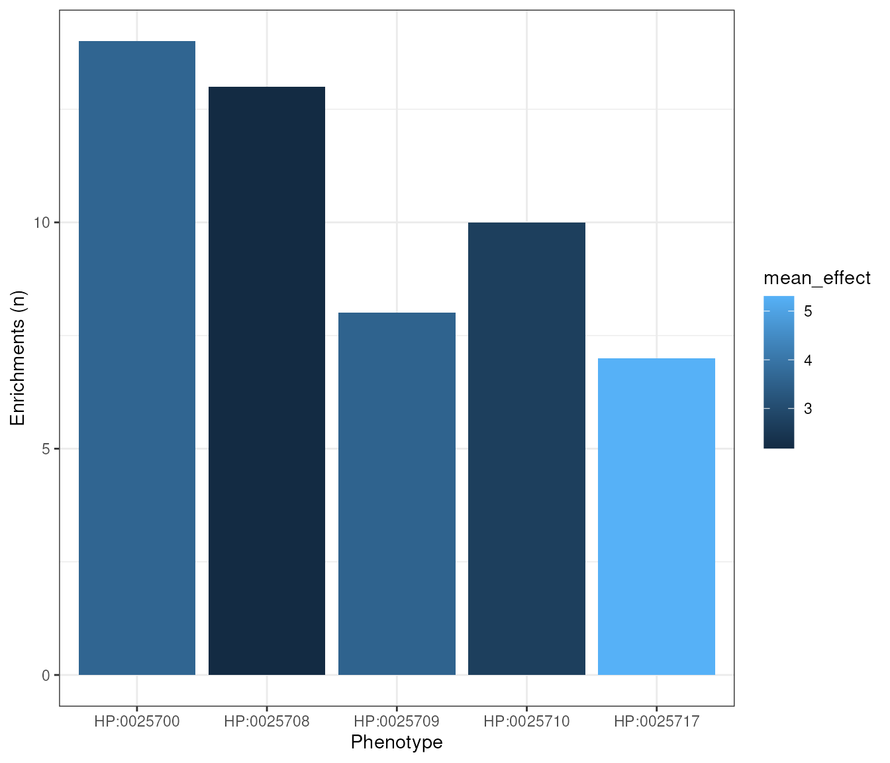

vignettes/MSTExplorer.Rmd
MSTExplorer.Rmd## Error in get(paste0(generic, ".", class), envir = get_method_env()) :
## object 'type_sum.accel' not foundThe MSTExplorer package is an extension of the EWCE
package. It is designed to run expression weighted celltype enrichment
(EWCE) on multiple gene lists in parallel. The results are
then stored both as separate .rds files, one for each
individual EWCE analysis, as well as a in a single
dataframe containing all the results.
This package is useful in cases where you have a large number of related, but separate, gene lists. In this vignette we will use an example from the Human Phenotype Ontology (HPO). The HPO contains over 9000 clinically relevant phenotypes annotated with lists of genes that have been found to be associated with the particular phenotype.
The MSTExplorer package requires the gene data to be in a particular format. It must be a data.frame that includes one column of gene list names, and another column of genes. For example:
| hpo_name | Gene |
|---|---|
| “Abnormal heart” | gene X |
| “Abnormal heart” | gene Y |
| “Poor vision” | gene Z |
| “Poor vision” | gene Y |
| “Poor vision” | gene W |
| “Short stature” | gene V |
etc…
Now we will get a dataset like this from the HPO.
gene_data <- HPOExplorer::load_phenotype_to_genes()## Reading cached RDS file: phenotype_to_genes.txt## + Version: v2024-12-12| hpo_id | hpo_name | ncbi_gene_id | gene_symbol | disease_id |
|---|---|---|---|---|
| HP:0033303 | Elevated urinary monocarboxylic acid level | 4716 | NDUFB10 | OMIM:619003 |
| HP:0033303 | Elevated urinary monocarboxylic acid level | 7915 | ALDH5A1 | OMIM:271980 |
| HP:0033303 | Elevated urinary monocarboxylic acid level | 3081 | HGD | ORPHA:56 |
| HP:0033303 | Elevated urinary monocarboxylic acid level | 3081 | HGD | OMIM:203500 |
| HP:0033303 | Elevated urinary monocarboxylic acid level | 3158 | HMGCS2 | OMIM:605911 |
| HP:0033303 | Elevated urinary monocarboxylic acid level | 763 | CA5A | OMIM:615751 |
In this example our gene list names column is called
Phenotype and our column of genes is called
Gene. However, different column names can be specified to
the MSTExplorer package.
# Loading CTD file
ctd <- load_example_ctd()## Loading ctd_DescartesHuman_example.rds
list_names <- unique(gene_data$hpo_id)[seq(10)]
reps <- 10 # in practice would use more reps
cores <- 1 # in practice would use more cores
save_dir <- file.path(tempdir())
save_dir_tmp <- file.path(save_dir,"results")The ctd (cell type data) file contains the single cell
RNA sequence data that is required for EWCE. for further information
about generating a ctd please see the EWCE
documentation. In this example we will use a CTD of human gene
expression data, generated from the Descartes Human Cell Atlas. Replace
this with your own CTD file.
Gene data is the dataframe containing gene list names and genes, in
this case we have already loaded it and assigned it to the variable
gene_data.
This is a character vector containing all the gene list names. This
can be obtained from your gene_data as follows. To save
time in this example analysis we will only use the first 10 gene lists
([1:10])
This is a character vector of genes to be used as the background
genes. See EWCE package docs for more details on background
genes.
list_name_column is the name of the column in gene_data
that contains the gene list names and gene_column contains
the genes.
The save_dir argument is the path to the directory where
the individual EWCE results will be saved.
The force_new argument can be set to TRUE
or FALSE and states if you want to redo and overwrite
analysis of gene lists that have already been saved to the
save_dir. Setting this to FALSE is useful in
cases where you stopped an analysis midway and would like to carry on
from where you left off.
The cores argument is the number of cores you would like
to run in parallel. This is dependent on what is available to you on
your computer. In this case we will just run it on one core, no
parallelism.
The gen_results function calls the
EWCE::bootstrap_enrichment_test function. Here we set the
input parameters related to this.
reps is the number of bootstrap reps to run, for this
tutorial we will only do 10 to save time, but typically you would want
to do closer to 100,000.
Now we have set up all our desired inputs, we can run the analysis.
out <- MSTExplorer::gen_results(ctd = ctd,
gene_data = gene_data,
list_names = list_names,
list_name_column = "hpo_id",
reps = reps,
cores = cores,
save_dir = save_dir,
force_new = TRUE,
save_dir_tmp = save_dir_tmp)## Validating gene lists..## 7 / 10 gene lists are valid.## Retrieving all genes using: gprofiler## Retrieving all organisms available in gprofiler.## Using stored `gprofiler_orgs`.## Mapping species name: human## Common name mapping found for human## 1 organism identified from search: hsapiens## Gene table with 63,150 rows retrieved.## Returning all 63,150 genes from human.## Returning 63,150 unique genes from entire human genome.## + Version: 2024-12-19## Background contains 63,150 genes.## Computing gene counts.
## Computing gene counts.
## Computing gene counts.
## Computing gene counts.
## Computing gene counts.
## Computing gene counts.
## Computing gene counts.## Done in: 18.4 seconds.##
## Saving results ==> /tmp/RtmpgIzGYY/gen_results.rds
results <- out$resultsJust as an example, we will create a plot showing the number of significant enrichments per phenotype in the all_results data.frame. We will use q <= 0.05 as the significance threshold.
library(ggplot2)
library(data.table)
#### Aggregate results ####
n_signif <- results[q<=0.05 & !is.na(q),
list(sig_enrichments = .N,
mean_effect=mean(fold_change)),
by="hpo_id"]
#### Plot ####
plot1 <- ggplot(n_signif, aes(x = stringr::str_wrap(hpo_id,width = 10),
y = sig_enrichments,
fill = mean_effect)) +
geom_col() +
labs(x="Phenotype",y="Enrichments (n)") +
theme_bw()
methods::show(plot1)
If you have a results directory of individual EWCE results but do not
have the merged dataframe of all results, you can call the
merge_results function manually. The save_dir
argument is the path to your results directory and the
list_name_column argument is the name of the column
containing gene list names. In this case we used “Phenotype” as this
column name when we generated the results.
all_results_2 <- MSTExplorer::merge_results(save_dir = save_dir_tmp)This function gets a character vector of genes associated with a particular gene list name.
phenotypes <- c("Scoliosis")
gene_set <- HPOExplorer::get_gene_lists(phenotypes = phenotypes,
phenotype_to_genes = gene_data)## Translating ontology terms to ids.
cat(paste(length(unique(gene_set$gene_symbol)),
"genes associated with",shQuote(phenotypes),":",
paste(unique(gene_set$gene_symbol)[seq(5)],collapse = ", ")))## 1124 genes associated with 'Scoliosis' : PIK3CA, CBS, FBXL4, TBX5, TRAPPC4This function is used to find which gene lists you have not yet analysed
all_phenotypes <- unique(gene_data$hpo_id)
unfinished <- MSTExplorer::get_unfinished_list_names(list_names = all_phenotypes,
save_dir_tmp = save_dir_tmp)
methods::show(paste(length(unfinished),"/",length(all_phenotypes),
"gene lists not yet analysed"))## [1] "11529 / 11536 gene lists not yet analysed"So far, we’ve iterated over gene list grouped by phenotypes. But we can also do this at the level of diseases (which are composed of combinations of phenotypes).
gene_data <- HPOExplorer::load_phenotype_to_genes("genes_to_phenotype.txt")## Reading cached RDS file: genes_to_phenotype.txt## + Version: v2024-12-12
#### Filter only to those with >=4 genes ####
gene_counts <- gene_data[,list(genes=length(unique(gene_symbol))),
by="disease_id"][genes>=4]
list_names <- unique(gene_counts$disease_id)[seq(5)]
out <- MSTExplorer::gen_results(ctd = ctd,
gene_data = gene_data,
list_name_column = "disease_id",
list_names = list_names,
annotLevel = 1,
force_new = TRUE,
reps = 10)## Validating gene lists..## 5 / 5 gene lists are valid.## Retrieving all genes using: gprofiler## Retrieving all organisms available in gprofiler.## Using stored `gprofiler_orgs`.## Mapping species name: human## Common name mapping found for human## 1 organism identified from search: hsapiens## Gene table with 63,150 rows retrieved.## Returning all 63,150 genes from human.## Returning 63,150 unique genes from entire human genome.## + Version: 2024-12-19## Background contains 63,150 genes.## Computing gene counts.
## Computing gene counts.
## Computing gene counts.
## Computing gene counts.
## Computing gene counts.## Done in: 12.1 seconds.##
## Saving results ==> /tmp/RtmpgIzGYY/gen_results.rds
results <- out$resultsRun the following code the replicate the main analysis in the study described here.
gene_data <- HPOExplorer::load_phenotype_to_genes()
gene_data[,n_gene:=length(unique(gene_symbol)),by="hpo_id"]
gene_data <- gene_data[n_gene>=4,]
ctd <- load_example_ctd("ctd_DescartesHuman.rds")
all_results <- MSTExplorer::gen_results(ctd = ctd,
list_name_column = "hpo_id",
gene_data = gene_data,
annotLevel = 2,
reps = 100000,
cores = 10)
utils::sessionInfo()## R Under development (unstable) (2024-12-15 r87442)
## Platform: x86_64-pc-linux-gnu
## Running under: Ubuntu 24.04.1 LTS
##
## Matrix products: default
## BLAS: /usr/lib/x86_64-linux-gnu/openblas-pthread/libblas.so.3
## LAPACK: /usr/lib/x86_64-linux-gnu/openblas-pthread/libopenblasp-r0.3.26.so; LAPACK version 3.12.0
##
## locale:
## [1] LC_CTYPE=en_US.UTF-8 LC_NUMERIC=C
## [3] LC_TIME=en_US.UTF-8 LC_COLLATE=en_US.UTF-8
## [5] LC_MONETARY=en_US.UTF-8 LC_MESSAGES=en_US.UTF-8
## [7] LC_PAPER=en_US.UTF-8 LC_NAME=C
## [9] LC_ADDRESS=C LC_TELEPHONE=C
## [11] LC_MEASUREMENT=en_US.UTF-8 LC_IDENTIFICATION=C
##
## time zone: UTC
## tzcode source: system (glibc)
##
## attached base packages:
## [1] stats graphics grDevices utils datasets methods base
##
## other attached packages:
## [1] data.table_1.16.4 ggplot2_3.5.1 MSTExplorer_1.0.6
##
## loaded via a namespace (and not attached):
## [1] later_1.4.1 bitops_1.0-9
## [3] ggplotify_0.1.2 GeneOverlap_1.43.0
## [5] filelock_1.0.3 tibble_3.2.1
## [7] lifecycle_1.0.4 httr2_1.0.7
## [9] KGExplorer_0.99.03 rstatix_0.7.2
## [11] HPOExplorer_1.0.3 doParallel_1.0.17
## [13] lattice_0.22-6 pals_1.9
## [15] backports_1.5.0 magrittr_2.0.3
## [17] limma_3.63.2 plotly_4.10.4
## [19] sass_0.4.9 rmarkdown_2.29
## [21] jquerylib_0.1.4 yaml_2.3.10
## [23] httpuv_1.6.15 HGNChelper_0.8.15
## [25] mapproj_1.2.11 DBI_1.2.3
## [27] RColorBrewer_1.1-3 maps_3.4.2.1
## [29] abind_1.4-8 zlibbioc_1.53.0
## [31] GenomicRanges_1.59.1 rvest_1.0.4
## [33] purrr_1.0.2 RCurl_1.98-1.16
## [35] BiocGenerics_0.53.3 yulab.utils_0.1.8
## [37] rappdirs_0.3.3 circlize_0.4.16
## [39] GenomeInfoDbData_1.2.13 IRanges_2.41.2
## [41] S4Vectors_0.45.2 rols_3.3.0
## [43] tidytree_0.4.6 piggyback_0.1.5
## [45] pkgdown_2.1.1 codetools_0.2-20
## [47] DelayedArray_0.33.3 xml2_1.3.6
## [49] tidyselect_1.2.1 shape_1.4.6.1
## [51] aplot_0.2.4 UCSC.utils_1.3.0
## [53] farver_2.1.2 matrixStats_1.4.1
## [55] stats4_4.5.0 BiocFileCache_2.15.0
## [57] jsonlite_1.8.9 GetoptLong_1.0.5
## [59] tidygraph_1.3.1 Formula_1.2-5
## [61] iterators_1.0.14 systemfonts_1.1.0
## [63] foreach_1.5.2 tools_4.5.0
## [65] treeio_1.31.0 ragg_1.3.3
## [67] Rcpp_1.0.13-1 glue_1.8.0
## [69] SparseArray_1.7.2 xfun_0.49
## [71] MatrixGenerics_1.19.0 GenomeInfoDb_1.43.2
## [73] RNOmni_1.0.1.2 dplyr_1.1.4
## [75] withr_3.0.2 BiocManager_1.30.25
## [77] fastmap_1.2.0 caTools_1.18.3
## [79] digest_0.6.37 R6_2.5.1
## [81] mime_0.12 gridGraphics_0.5-1
## [83] textshaping_0.4.1 colorspace_2.1-1
## [85] gtools_3.9.5 dichromat_2.0-0.1
## [87] RSQLite_2.3.9 tidyr_1.3.1
## [89] generics_0.1.3 httr_1.4.7
## [91] htmlwidgets_1.6.4 S4Arrays_1.7.1
## [93] scatterplot3d_0.3-44 pkgconfig_2.0.3
## [95] gtable_0.3.6 blob_1.2.4
## [97] ComplexHeatmap_2.23.0 SingleCellExperiment_1.29.1
## [99] XVector_0.47.0 htmltools_0.5.8.1
## [101] carData_3.0-5 clue_0.3-66
## [103] scales_1.3.0 Biobase_2.67.0
## [105] png_0.1-8 ggfun_0.1.8
## [107] knitr_1.49 reshape2_1.4.4
## [109] rjson_0.2.23 nlme_3.1-166
## [111] curl_6.0.1 cachem_1.1.0
## [113] GlobalOptions_0.1.2 Polychrome_1.5.1
## [115] stringr_1.5.1 BiocVersion_3.21.1
## [117] KernSmooth_2.23-24 parallel_4.5.0
## [119] AnnotationDbi_1.69.0 desc_1.4.3
## [121] pillar_1.10.0 grid_4.5.0
## [123] vctrs_0.6.5 gplots_3.2.0
## [125] promises_1.3.2 ggpubr_0.6.0
## [127] car_3.1-3 dbplyr_2.5.0
## [129] xtable_1.8-4 cluster_2.1.8
## [131] evaluate_1.0.1 orthogene_1.13.0
## [133] cli_3.6.3 compiler_4.5.0
## [135] rlang_1.1.4 crayon_1.5.3
## [137] grr_0.9.5 simona_1.5.0
## [139] ggsignif_0.6.4 labeling_0.4.3
## [141] gprofiler2_0.2.3 plyr_1.8.9
## [143] EWCE_1.15.0 fs_1.6.5
## [145] stringi_1.8.4 viridisLite_0.4.2
## [147] ewceData_1.15.0 BiocParallel_1.41.0
## [149] babelgene_22.9 munsell_0.5.1
## [151] Biostrings_2.75.3 lazyeval_0.2.2
## [153] homologene_1.4.68.19.3.27 Matrix_1.7-1
## [155] ExperimentHub_2.15.0 patchwork_1.3.0
## [157] bit64_4.5.2 statmod_1.5.0
## [159] KEGGREST_1.47.0 shiny_1.10.0
## [161] SummarizedExperiment_1.37.0 AnnotationHub_3.15.0
## [163] igraph_2.1.2 broom_1.0.7
## [165] memoise_2.0.1 bslib_0.8.0
## [167] ggtree_3.15.0 bit_4.5.0.1
## [169] splitstackshape_1.4.8 ape_5.8-1